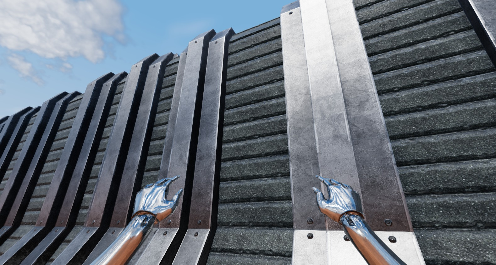

The metal bracket faces now retain their reflections as the camera moves. The repair transforms each instance’s normal-map tangent with its placement, and applies ambient occlusion through native material lighting.
Findings and validation · Open the local engine

The paired views use the same camera path, original geometry and materials. Clouds were not frozen between recordings. Deep gaps still receive occlusion; the flat front faces no longer switch to solid black.
Videos were recorded at 30 FPS for inspection. Benchmark timings are recorded separately.